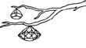

\1\2ğaç\3
Elmaslar nereden gelir?

Volkanlardan. Bütün elmaslar yerinaltında devasa bir ısı ve basınç altında oluşur ve yer yüzeyine volkanik patlamalar sonucu gelir.
Elmaslar yerin 160 ila 480 km altında oluşur. Bunların çoğu kimberlit adlı volkanik bir kayanın içinde bulunur ve volkanik faaliyetin hâlâ yaygın olduğu bölgelerde çıkarılır. Diğer elmaslar orijinal kimberlitlerinden ayrılarak başıboş vaziyette bulunur.
Dünyada yirmi ülkede elmas çıkarılır. Güney Afrika günümüzde elmas üretiminde Avustralya, Demokratik Kongo Cumhuriyeti, Botsvana ve Rusya’nın ardından beşinci sıradadır.
Son derece sert olan üç şey vardır: Çelik, elmas ve kendini bilmek.
BENJAMIN FRANKLIN
Elmas, saf karbondan meydana gelir. Kurşunkalem “ucu”nun yapıldığı madde olan grafit de karbondan oluşur, ama bu maddede karbon atomları farklı şekilde dizilmiştir. Elmas yeryüzünde doğal olarak varolan maddelerin en sertlerinden biridir: Mohs Sertlik Skalası’nda (10) değerine sahiptir. Ama (1,5) değerine sahip olan grafit (talk pudrasından birazcık daha serttir) en yumuşaklarından biridir.
Bilinen en büyük elmas 4000 km boyundadır ve on milyar trilyon trilyon kırattır. Doğrudan Avustralya’nın üzerinde (sekiz ışık yılı uzakta) bulunan bu elmas Erboğa takımyıldızındaki “Lucy” yıldızındadır.
“Lucy”, adını Beatles’ın “Lucy in the Sky with Diamonds [Gökyüzünde Elmaslarla Lucy]” adlı şarksından aldı; teknik adı ise beyaz cüce BPM 37093’tür. Beatles’ın şarkısı bu adı, John Lennon’ın oğlu Julian’ın dört yaşındaki arkadaşı Lucy Richardson’ı çizdiği bir resim üzerine aldı.
Elmas eskiden dünyadaki bilinen en sert maddeydi. Ama Ağustos 2005’te Alman bilimciler laboratuvarda daha sert bir madde oluşturmayı başardı. Toplanmış karbon nano çubuk (ACNR – aggregated carbon nanorod) adlı bu madde çok güçlü karbon moleküllerini sıkıştırıp 2226°C’ye kadar ısıtarak meydana getirildi.
Bu moleküllerden her biri, beşgen ve altıgen biçiminde içiçe geçen 60 atom içerir; bu moleküllerin minik futbol toplarına benzediği söylenebilir. ACNR o kadar serttir ki, elması rahatlıkla çizebilir.